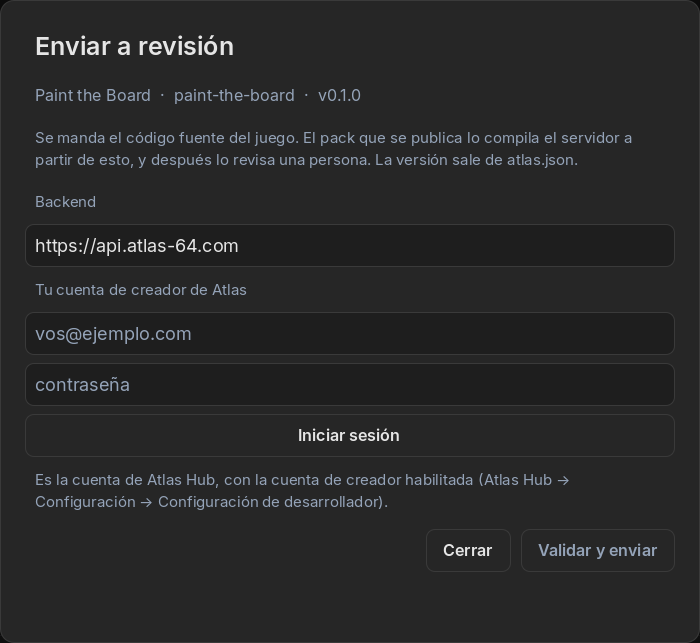
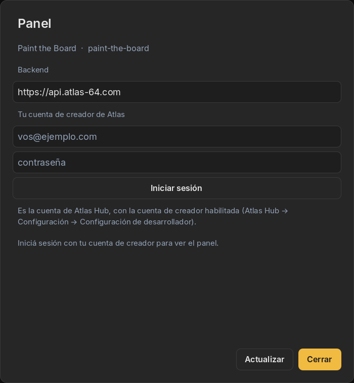

01The road to the store
Publishing is one button in Studio, Enviar a revisión (send for review), followed by two kinds of review: automatic checks that take minutes, and a person who plays your game. When both say yes, your game appears in the store of every Atlas 64.
02Before you send it
The game
- It passes Validar Proyecto and you’ve played it on a real board (guide 5).
- It explains its own rules and how to set up the table, on screen.
- The version in the Ficha del Juego is the one you want to publish. Many creators use
1.0.0for the first public version.
The listing
What the store shows comes from the Ficha del Juego, and goes live when the submission is approved:
- Description: what the game is and why it’s fun, in a few lines.
- Categories: up to 3 of Arcade, Estrategia, Puzzle, Memoria, Clásicos, Party, Deportes, Rol, Educativo.
- Boards: the minimum your game needs and the maximum it uses. The store shows it, like “2–3 boards”.
- Covers: a vertical cover of 320 × 440 and, optionally, a landscape one.
- Licences for any images, sounds or fonts you didn’t make yourself (Agregar licencia, at the end of the sheet).

The content
Atlas games are for all ages: no explicit violence, sexual content, offensive language, gambling or drug use. And the name can’t be the same as or similar to Atlas, Wololo Studio or the games made by the Atlas team.
03Send it
-
Open “Enviar a revisión”
In the Panel de Control tab. Sign in with your creator account if Studio asks. The dialog shows the title, identifier and version it will send, taken from the game sheet.

“The server builds the published pack from this, and then a person reviews it.” -
Press “Validar y enviar”
Validar y enviar (validate and send) runs the validator first: a game with errors never leaves your PC, and you see what to fix right away. Then Studio packs the game’s files (not the cache or the parts Studio already provides), uploads them with a progress bar, and starts following the status.
-
Close it if you like
The review keeps going without Studio. The status appears in the project list and in Panel.
04The automatic checks
On the server, your game goes through five gates, in order. If one fails, the game is rejected right there, with the reason and, when it applies, the file and line.
- A safe package. Only allowed file types, everything inside your game’s folder, nothing executable.
- The official base. The server replaces the technical parts that Studio adds with its own official copy, and checks that the version matches.
- A code safety scan. The same rules as Validar Proyecto. If you validated, this passes. Anything doubtful goes to the reviewer as a note.
- A sealed build. The game is built in isolation, without internet. If it crashes or takes too long, it’s rejected.
- Verification and signature. The finished game is opened exactly the way AtlasHub will open it, checked for size, and signed so phones can trust it.
This is why validating in Studio matters: it runs the same rules, so surprises here are rare.
05Human review
Then a person from the Atlas team downloads your game and plays it, in the Simulator or on a real board. Every submission is reviewed by a person, and a creator’s first versions always are.
They check that the game works, that it follows the content rules, that the listing matches the game, and anything the automatic checks flagged.
The current estimate is between one week and two months, depending on how many games are waiting. It’s an estimate, not a promise.
06Approved or rejected
Your game is published with the description, categories, boards and covers from your game sheet, and appears in the store for every Atlas 64.
The price and featured spots are set by the Atlas team. For now, games are published for free.
The reason appears in Panel: the reviewer’s written notes, or what the automatic check found, with the file and line.
Fix it (the agent can help: paste the reason in the chat) and send it again. After a rejection you can resend the same version.
07Updates
An update takes exactly the same path. Three rules:
- Raise the version number in the game sheet. A version that’s already published can’t be sent again: Studio will say “Esa versión ya está publicada; subí el número de versión” (that version is already published; raise the version number).
- One submission at a time per version. Once a version is in review it’s locked. To change something, send a new version.
- Listing changes travel with a submission. A new description or cover goes live when the next version is approved, after the same review.
08After publishing: the Panel
Panel, in the Control Panel tab or in the project list, shows how your game is doing:
- The listing, as it appears in the store.
- Every version, and which ones were withdrawn.
- Installs: total and last 30 days.
- Reports from players, grouped by reason.
- Every submission, with the reason for any rejection.

It shows numbers only: never who installed your game or who reported it.
In the home screen, the Estado column summarises each game’s latest submission:
| Status | Means |
|---|---|
| En revisión (in review) | Going through the automatic checks or waiting for a person. |
| En producción (live) | Approved or published. |
| Revisión necesaria (changes needed) | The latest submission was rejected, even if an earlier version is still published. |
| Sin enviar (not sent) | Never submitted. |
09Limits
| Size of what Studio uploads | Up to 200 MB, 5,000 files |
| Size of the finished game | Up to 256 MB |
| Submissions | Up to 10 per day per creator |
| Who can publish | Atlas Developer accounts with the current agreement accepted |
That’s the whole path: from an idea in guide 1 to a game on every table. Go make something people will gather around.